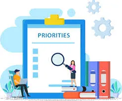
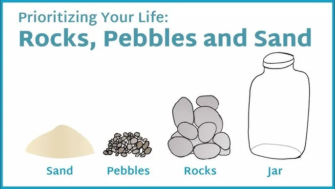
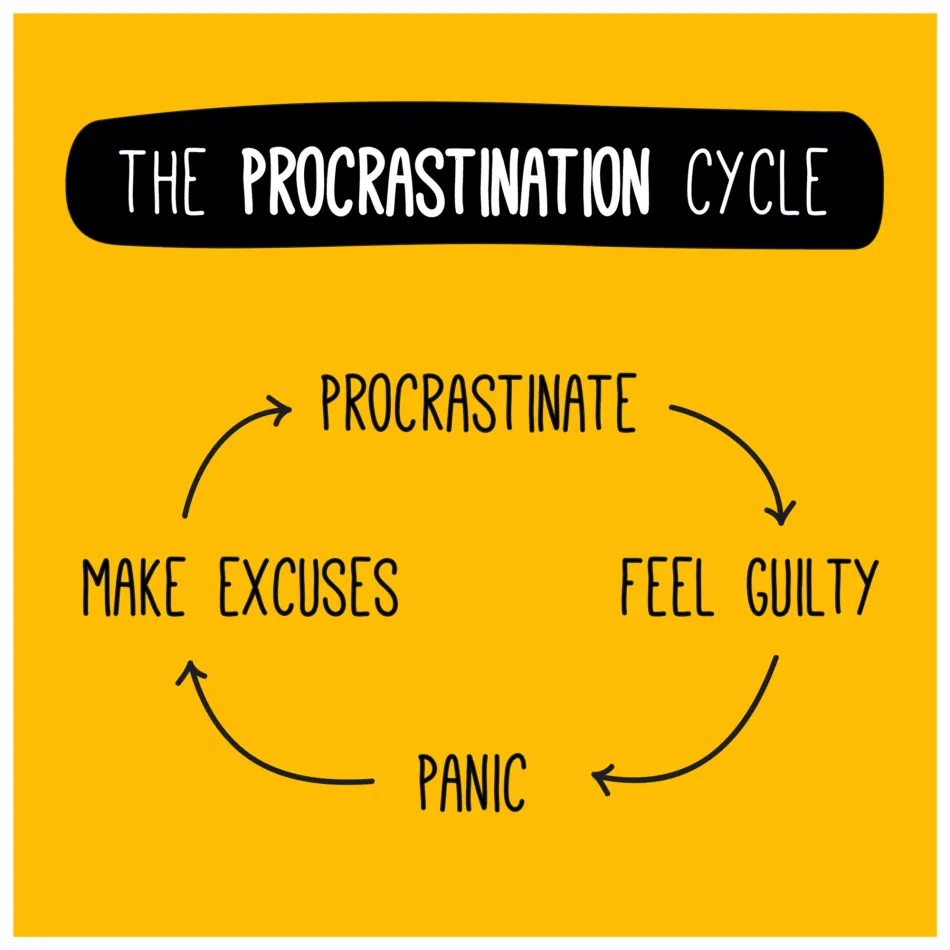

Option 1 (Printable): Distribute the Self-Assessment worksheet. Option 2 (Digital): Visit psychologytoday.com/.../time-management-skills-test — students click "no thanks, close this window" after submitting to see results without logging in.
Introduction
Module Objective
We All Have 24 Hours
But we each have different challenges:
Responsibilities
Work, school, home, and community demands
Financial Obligations
Bills, savings goals, and family needs
Family Sizes
Dependents, caregiving, and relationships
Levels of Support
Resources, networks, and access to help
The goal of effective time management is to maximize productivity and achieve your goals by optimizing how you use your time
What You Will Be Able to Do
1
Understand time management and its importance at home and on the job
2
Identify uncontrollable events and develop coping strategies to handle them
3
Distinguish between urgent and important tasks and know how to handle each
4
Use practical tools and systems to accomplish day-to-day tasks and long-range goals
Presentation
Setting Priorities
What Are Priorities?
Priorities are things that are more important than others and need to be dealt with first — the ranking of something's importance.
Priorities establish the sequence in which things should be done.
Discussion
What are your current top 3 priorities in life? How do you decide what comes first each day?

The Big Rocks of Time

If you fill your jar with sand first, there's no room for the big rocks. The sand represents small, low-priority tasks.
Put the big rocks in first — your most important priorities — then let the smaller things fill around them.
Not Urgent + ImportantScheduleGoals, planning, self-care, exercise
Urgent + Not ImportantDelegateInterruptions, some meetings
Not Urgent + Not ImportantEliminateSocial media, time wasters
Classify This Task
Which Eisenhower quadrant does each scenario belong in? Click to explore.
DO FIRST
Urgent + Important
Your child has a fever and needs to go to the doctor. Your electricity will be shut off if you don't pay the bill today. Your boss needs a report in one hour.
Key question: Does it have a deadline AND real consequences if I ignore it? Then it goes here.
SCHEDULE IT
Not Urgent + Important
Planning next week's meals. Going to the gym. Applying for a better job. Working toward your GED. These don't feel urgent today — but skipping them has a long-term cost.
Key question: Is this aligned with my big rocks and long-term goals?
ELIMINATE
Not Urgent + Not Important
Scrolling social media for 45 minutes. Watching a third TV episode when you planned to watch one. Reorganizing a drawer that doesn't need it.
Key question: Does this move me toward any of my priorities? If not — eliminate or strictly limit it.
Instructor Prompt
Ask the class: "What is something you did yesterday that might belong in the Eliminate quadrant?" Allow 2-3 volunteers to share without judgment.
Daily & Weekly Planners
Keeping the day's and week's activities in view ensures priority tasks get accomplished.
It also helps you find free time you didn't know you had!
Having the whole family help with chores creates time for what matters most
♥
Builds Self-Esteem
Children feel valued and capable, gaining a sense of accomplishment and growing confidence in their abilities
⚙
Teaches Life Skills
Develops responsibility, ownership, time management habits, and a strong work ethic early on
☆
Fosters Teamwork
Creates a sense of belonging, shared family commitment, and more quality time for everyone
Presentation
Common Challenges
Time Management Dangers
Despite our best efforts, these challenges sabotage our time — click each card to learn more
📱
Distractions
Distractions
Phones, social media, and notifications pull focus away from what matters most.
⏳
Procrastination
Procrastination
Putting things off creates a cycle of guilt, panic, and rushed work.
🔄
Multitasking
Multitasking
Doing many things at once actually slows you down and leads to more mistakes.
🙋
Over-Commitment
Over-Commitment
Not saying "No" leads to burnout and prevents focus on real priorities.
🛠
No Structure
No Structure
Without routines and systems, days become chaotic and goals slip away.
Technology Distractions
Smartphones are designed to capture and hold your attention. Every notification is a deliberate interruption of your focus.
Group Activity
Count the notifications you received on your phone today. On iPhone: swipe down from the top-left corner. Who has the most? What apps are sending them?
Instructor Prompt
After counting: "What strategies do you use — or plan to use — to stay focused? What could you turn off right now?"
📲
Watch: How Smartphones Sabotage Your Brain's Ability to Focus
Procrastination

Procrastination is the act of putting off something until a later time.
The procrastination cycle: Procrastinate → Make excuses → Feel guilty → Panic → Repeat. The good news? Procrastination is a habit that can be broken.
Instructor Prompt
Ask: "What is one thing you have been putting off? What is the real reason you haven't started it yet?"
Watch: 3 Steps to Break the Procrastination Cycle
Multitasking
Often seen as a strength — but science shows it has a real cost
Inefficiency
Switching between tasks wastes time and mental energy with every switch
More Mistakes
Divided attention leads to errors and lower quality results
Reduced Creativity
Deep thinking requires focused, uninterrupted blocks of time
Stress & Burnout
Chronic multitasking drains energy and increases chronic stress
Watch: What Multitasking Does to Your Brain
Over-Commitment
The inability to say "No" leads to spreading yourself too thin — and nothing gets the attention it deserves.
Learning to set boundaries is a skill, not selfishness. It protects your priorities.
Discussion
Identify situations where you struggle with saying no. What are polite but effective ways to decline? Examples: "I appreciate you thinking of me, but I can't commit to this right now." / "Unfortunately, now isn't a good time for me."
Lack of Structure & Routine
Without daily structure, it's easy to let time slip away on things that don't move you forward.
Small, consistent habits — like a morning clarity ritual or a weekly reset — compound into big results over time.
Focus on one task at a time
Learn something new for 20 minutes a day
Create a "digital sunset" each evening
Use a Weekly Reset Sunday routine
🛠
Watch: 10 Habits That Will Completely Change Your Life
What Would You Do?
Click each scenario to reveal strategies for managing unexpected time
Before you default to scrolling, ask yourself: "What is one thing on my Big Rocks list I keep putting off?" Use the Eisenhower Matrix — this time should go into the Schedule It quadrant. Batch small tasks, prep tomorrow's meals, make a phone call you've been avoiding, or simply rest intentionally. The key is a conscious choice, not a drift.
Resist the urge to check your phone first. High performers use the first 20 minutes of the day for intention-setting — review your top 3 priorities for the day, do light movement, or spend time on something meaningful before the world demands your attention. Morning clarity rituals are one of the most powerful habits for time management.
Protect this "found" time before someone else claims it. Move immediately to the next item on your planner. If nothing is pressing, do "2-minute tasks" — small jobs that have been piling up. Alternatively, use the time to prepare for tomorrow so that you start the next day already ahead.
Instructor Prompt
After exploring the accordion, ask: "What do you typically do when you get unexpected free time? Does it align with your priorities?"
Evaluation
Check Your Knowledge
Quick Check
Select the best answer, then discuss as a class
You need to prepare for next week's job interview. Which Eisenhower Matrix quadrant should this go in?
Instructor Note
Correct answer: B. The interview is important (it affects your future), but it isn't urgent yet — there's still a week. This is exactly the kind of task people procrastinate on because it feels "later." Use this as a discussion moment: "What happens if you wait until the night before?"
Assessment Debrief
After completing the paper self-assessment — let's discuss what you found
What did your score reveal?
Which time management areas did you rate yourself highest on? Which areas had your lowest scores?
What surprised you?
Was there a strength you didn't recognize before? A weakness that surprised you when you saw it written down?
One thing to change
Identify one specific behavior from today's lesson you can change this week. Make it SMART.
Accountability partner
Who can you share your goal with? Having someone check in with you dramatically increases follow-through.
What did you learn today that you didn't know before?
2
What tips or tools do you plan to use to better manage your time?
3
What is one thing you will change starting today?
Instructor Note
Distribute the exit ticket slip or have students write their answers on index cards. Collect them to inform follow-up instruction. Provide opportunity for 2-3 volunteers to share aloud.
Application
Put It Into Practice
How Will You Put Your TIME to Use?
Round Robin — Stand & Deliver: each learner answers a different question, then papers pass to the right
1
What are the most important concepts you learned from this module?
2
How will you use this information in your daily life or at work?
3
What other steps can you take to learn more about this topic?
4
With whom can you share what you've learned, and what would you tell them?
5
What is one question you still have about this topic?
Instructor Note — Round Robin
Each learner picks one question and writes it on a blank sheet. Papers pass right — next person writes a response. Repeat until papers return to owners. Each student reads summaries aloud. Facilitate whole-class discussion.
Congratulations, you have completed this lesson!
"This is the beginning of a new day. You have been given this day to use as you will. What you do today is important because you are exchanging a day of your life for it."